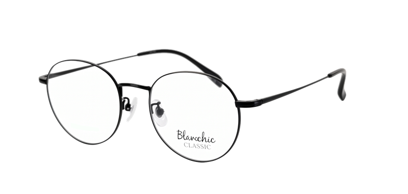
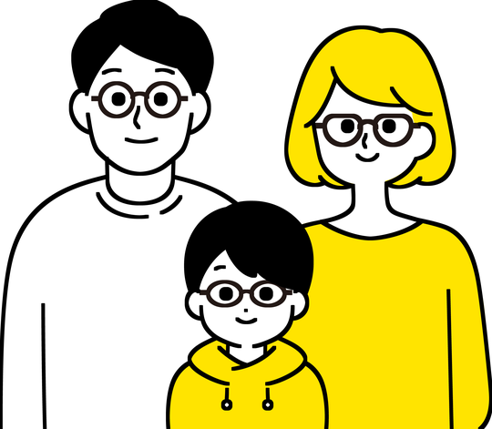
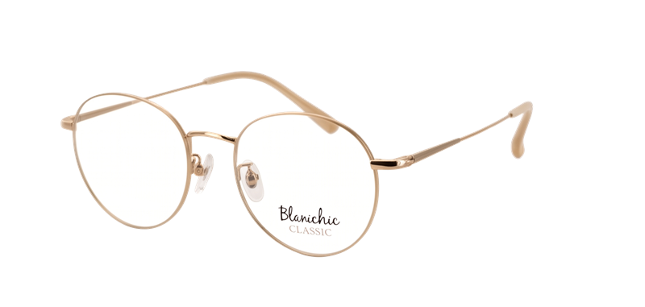
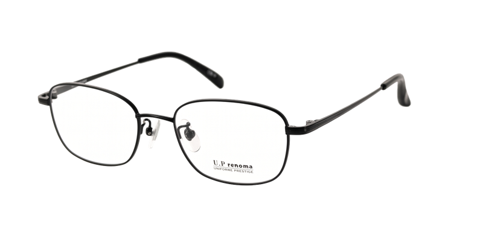
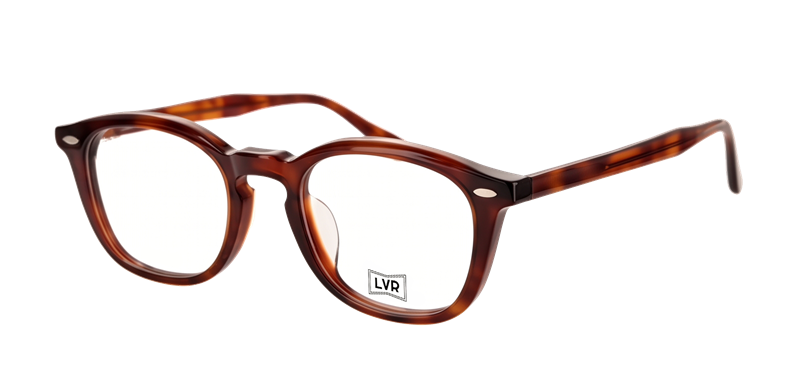
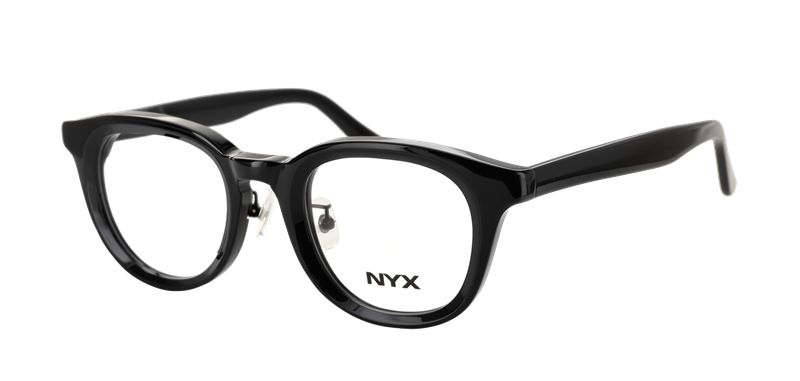
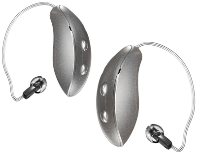
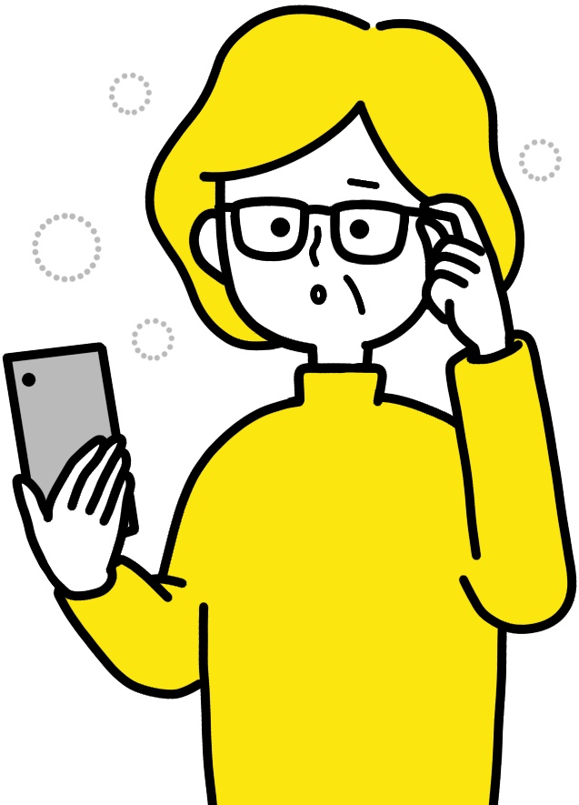
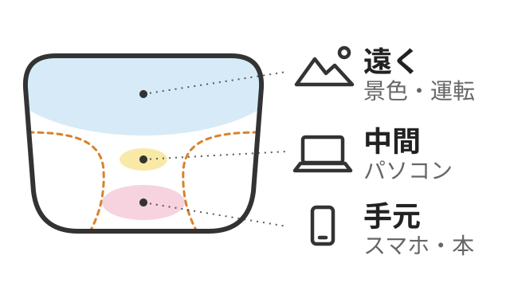
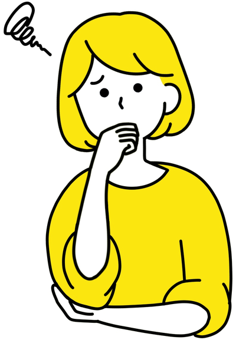

お得な内容
＼お手頃なメガネが、
もっとおトクに／
ブラックフライデー限定
対象のメガネなら、遠近両用レンズも込みで
標準レンズ付き対象商品が
8,800円〜税込
※対象フレーム・標準レンズ・割引をすべて併用した場合
遠近両用レンズなども
追加料金0円
※標準レンズの場合
商品例

標準レンズ付きセット価格
13,200円税込
ブラックフライデー限定値引き最大4,400円OFF
8,800円税込
最大4,400円OFFの内訳合計 −4,400円
- 標準レンズ付きセット価格13,200円
- ブラックフライデー
限定値引き−2,200円 - 眼科の処方箋ご持参−1,100円
- LINE新規お友だち登録−1,100円
- 13,200円から最大4,400円OFF！
- お支払い（税込）8,800円
※割引をすべて併用した場合
通常価格
13,200円
最大4,400円OFFで
8,800円(税込)
- フレーム
- 遠近両用もOKレンズ
- ケース
- クロス
- 保証
すべてセットでこの価格！
さらに2つの割引で
LINE新規お友だち登録で
1,100円OFF
眼科の処方箋ご持参で
1,100円OFF
割引をぜんぶ使うと
11,000円 から さらに 2,200円OFF
8,800円〜税込
※価格はすべて税込
※標準レンズの場合
※本庄南大通り店を除く
メガネ2本同時購入で、
もっとおトク上記の割引と併用できます
1本目
10%OFF
2本目以降
（安い方）
20%OFF

ご家族・ご友人とでも
お一人で2本でもOK
対象ブランド例

ブランシック
Blancchic
大きめレンズで小顔効果
通常13,200円▶8,800円〜

ユーピーレノマ
U.P renoma
知的な印象のスクエア
通常13,200円▶8,800円〜

エルブイアール
LVR
クラシカルなボストン型
通常16,500円▶12,100円〜

ニクス
NYX
オールブラックの定番形
通常23,650円▶19,250円〜
ほかにも、対象のフレームを
多数ご用意しています
ぜひ店頭でお試しください
※お取り扱いのデザインは店舗によって異なります
お近くのお店を探す補聴器もおトクに

スターキー
Gシリーズ
割引をぜんぶ使うと
最大4,400円OFF
耳かけ型｜AIがまわりの音に合わせて自動調整
ブラックフライデー限定値引き 2,200円＋LINE新規お友だち登録 1,100円＋眼科の処方箋ご持参 1,100円
割引をぜんぶ使うと
最大4,400円OFF
アイメガネの補聴器サポート
-
認定補聴器技能者が在籍
選び方から調整までおまかせ
※不在の日もあるため、ご予約がおすすめです
認定補聴器技能者とは？
公益財団法人テクノエイド協会が認定する、補聴器の専門資格です。きこえを測り、お一人おひとりに合わせた補聴器選びから調整までサポートします。
-
2週間の無料貸出
おうちで、ふだんの音で試せます
アイメガネが選ばれる
3つの理由
手元が見えにくくなった方へ

見え方に合わせて選べるレンズ
遠近・中近・近々も追加料金0円
※対象のメガネ一式・標準レンズの場合
あなたに合うレンズを見つけよう
あなたに合うレンズを見つけよう
メガネのレンズ

色の部分：よく見える範囲点線の外側：ゆがみ・ぼやけが出やすい部分赤い点線：手元を少しサポートする部分
遠くも手元も、これ1本で
こんな方におすすめ！
国家検定資格
眼鏡作製技能士が全店に在籍
※シフト制のため不在の日もあります。ご希望の方はご予約がおすすめです
眼鏡作製技能士とは？
メガネに関する日本で唯一の国家検定資格です。使い方やお悩みをお聞きして、視力の測定からレンズ・フレーム選び、加工、フィッティング、アフターケアまで行う、メガネづくりの総合エキスパートです。
最近、手元が見えにくくて…
遠近両用ははじめてで不安

使い方をお聞きして、
見え方を測り、
かけ心地の調整まで
おまかせください！
セール価格でも、すべて付く充実の保証
通常保証どなたでも
視え方保証
6か月
度数交換が
何度でも無料品質保証
1年
不具合は
無料で交換アイ情補償
1年
壊したら、
同じメガネを半額で
キッズ＆ジュニア保証中学生以下
元気に遊んで壊しちゃっても大丈夫！
3つの保証が、すべて1年間
視え方保証
度数交換が
何度でも無料品質保証
不具合は
無料で交換破損・紛失
1回目は無料、2回目・紛失は50%引き
白内障の手術後の方へ
手術後の見え方の変化にも安心
4つの保証が、すべて1年間
視え方保証
度数の変化に
何度でも対応品質保証
不具合は
無料で交換カラー変更
まぶしさに
合わせて色変更半額補償
破損は
半額で購入
※当社指定レンズが対象です
メガネの点検・クリーニングは
いつでも無料ですご家族のメガネや、他店で買ったメガネもお気軽にどうぞ
※品質保証は、通常のお取り扱いで生じた損傷が対象です（現品と交換のため、ご持参ください）。
※アイ情補償は、お客さまご自身で壊した場合に、同じメガネを半額でご用意します。ほかの割引とは併用できません。
※くわしい条件は店頭でご確認ください。
キャンペーン概要
- 期間
- 11/13金〜11/29日
- 店舗
- アイメガネ各店※本庄南大通り店を除く
- 対象
対象のメガネ一式フレーム・標準レンズ・ケース・クロス・保証付き
補聴器スターキー Gシリーズ（割引はメガネと同じ・最大4,400円OFF）
- 割引
-
- ブラックフライデー限定値引き2,200円OFF
- LINE新規お友だち登録1,100円OFF
- 眼科の処方箋ご持参1,100円OFF
- メガネ2本同時購入2本目以降は安い方1本目 10%OFF
2本目 20%OFF
すべての割引を併用できます
- レンズ
- 標準レンズなら追加料金0円遠近両用・中近・近々・アシストレンズもOK※超薄型・コーティング・レンズのグレード変更等は別途料金
※8,800円は、13,200円の対象のメガネ一式に、ブラックフライデー限定値引き2,200円・LINE新規お友だち登録の当日クーポン1,100円・眼科の処方箋ご持参1,100円の割引をすべて使った場合の価格です
※対象ブランドのお取り扱いデザインは店舗によって異なります
※価格はすべて税込
お近くのお店を探す
ご予約ならスムーズにご案内
※WEB予約は、3日後以降の日程でお取りいただけます。
お急ぎの場合はお電話でお問い合わせください。
取扱商材
資格者在籍
設備
ご予約なしでもご来店いただけます
BLACK FRIDAY
あなたに合うメガネを、
この機会に。
11/13金〜11/29日
近くのお店で予約するご予約ならスムーズにご案内